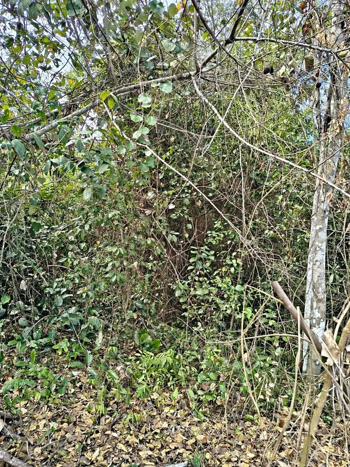

~PEN 60,000 (según el anuncio) 18 ha

*VENDO TERRENO AGRÍCOLA - 18 HECTÁREAS* - *Ubicación*: Cerca a Mariscal Cáceres, Tingo de Ponaza - *Extensión*: 18 hectáreas = 180,000 m² - *Precio*: S/60,000 soles negociables - *Características*: - Apta para *sombrío de maíz* 🌽 - *Tiene árboles maderables* 🌳 - Suelo bueno para agricultura - *Ideal para*: Agricultura + aprovechamiento forestal